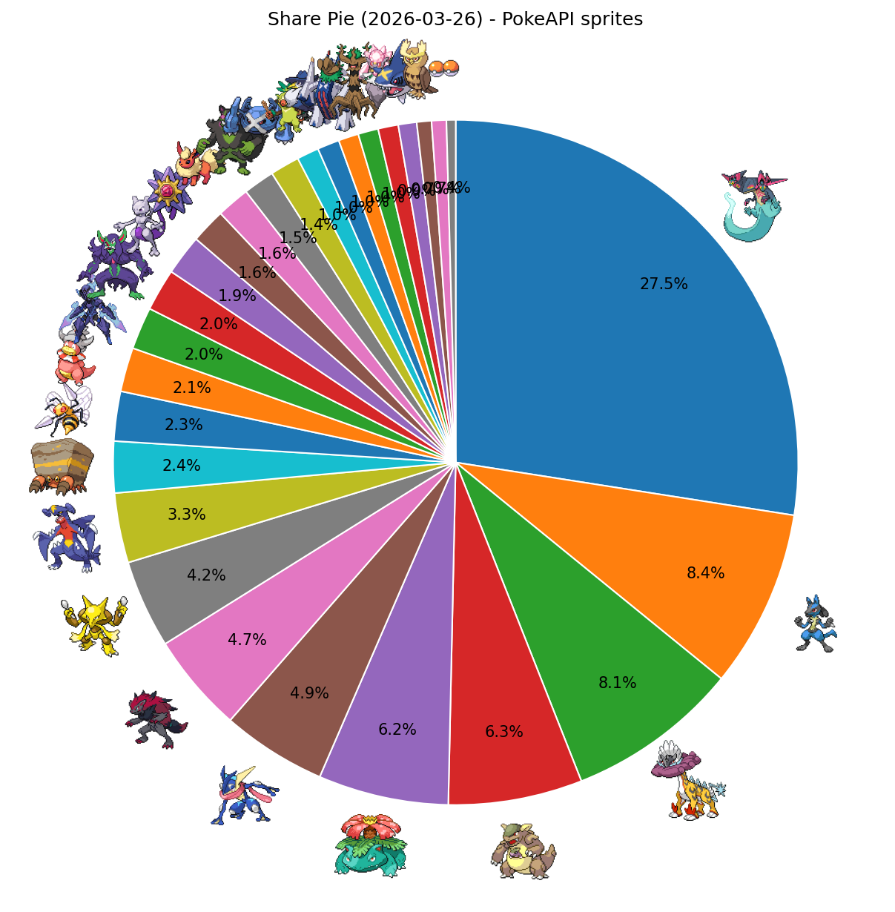
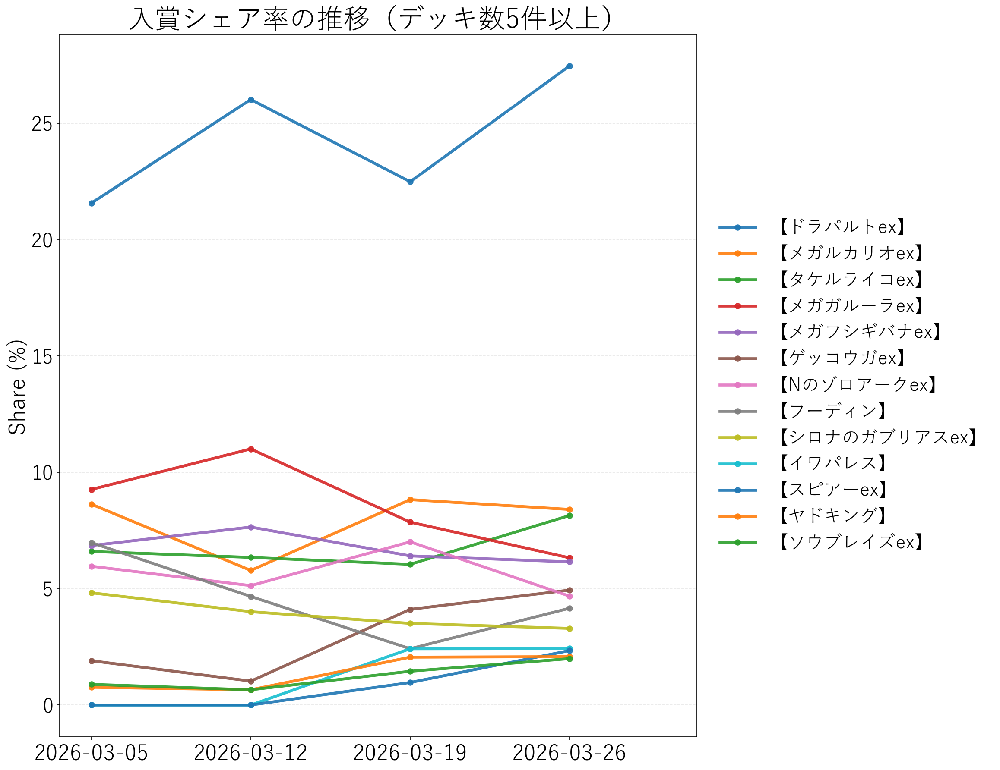

↔ 横スクロール
| 順位 | デッキタイプ | 入賞数 | シェア |
|---|---|---|---|
| 1 | 【ドラパルトex】 | 317 | 27.47% |
| 2 | 【メガルカリオex】 | 97 | 8.41% |
| 3 | 【タケルライコex】 | 94 | 8.15% |
| 4 | 【メガガルーラex】 | 73 | 6.33% |
| 5 | 【メガフシギバナex】 | 71 | 6.15% |
| 6 | 【ゲッコウガex】 | 57 | 4.94% |
| 7 | 【Nのゾロアークex】 | 54 | 4.68% |
| 8 | 【フーディン】 | 48 | 4.16% |
| 9 | 【シロナのガブリアスex】 | 38 | 3.29% |
| 10 | 【イワパレス】 | 28 | 2.43% |
| 11 | 【スピアーex】 | 27 | 2.34% |
| 12 | 【ヤドキング】 | 24 | 2.08% |
| 13 | 【ソウブレイズex】 | 23 | 1.99% |
| 14 | 【マリィのオーロンゲex】 | 23 | 1.99% |
| 15 | 【ロケット団のミュウツーex】 | 22 | 1.91% |
| 16 | 【メガスターミーex】 | 19 | 1.65% |
| 17 | 【ブースターex】 | 18 | 1.56% |
| 18 | 【イイネイヌ】 | 17 | 1.47% |
| 19 | 【ダイゴのメタグロスex】 | 16 | 1.39% |
| 20 | 【おまつりおんど】 | 12 | 1.04% |
| 21 | 【ロケット団のドンカラス】 | 12 | 1.04% |
| 22 | 【ブリジュラスex】 | 11 | 0.95% |
| 23 | 【ホップのオーロット】 | 11 | 0.95% |
| 24 | 【メガディアンシーex】 | 11 | 0.95% |
| 25 | 【メガサメハダーex】 | 10 | 0.87% |
| 26 | 【テラスタルバレット】 | 8 | 0.69% |
| 27 | その他 | 13 | 1.13% |

PokeAPIアイコン付きシェア円グラフ

入賞シェア率の推移